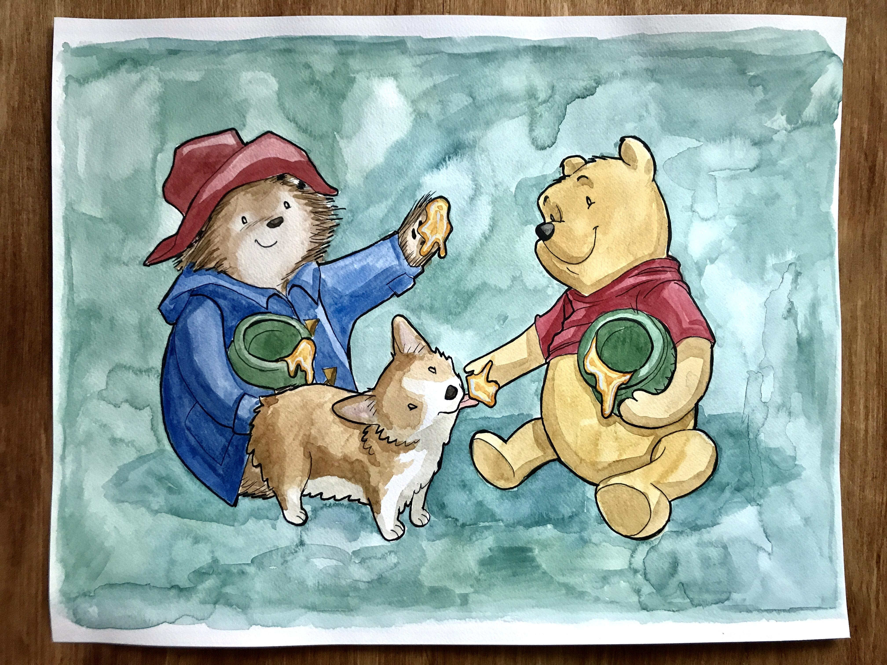

About Paddington
Meet Paddington Bear! He's the adorable bear with a penchant for marmalade sandwiches and exploring London's nooks and crannies. With his trusty suitcase and friendly demeanor, Paddington's adventures are sure to bring a smile to your face!
Paddington and his friends
Paddington's Characteristics
- He loves honey!
- He has a red hat
- He doesn't like rain
Paddington's Friends
Paddington has some awesome friends. I think his best friend is Winnie The Pooh. He loves honey too. Click on the links below to read more about them: